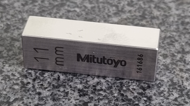
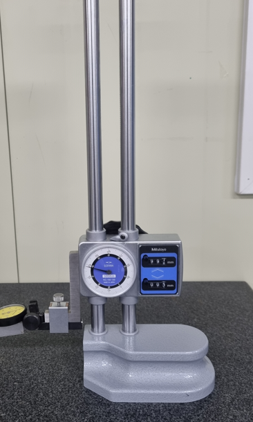
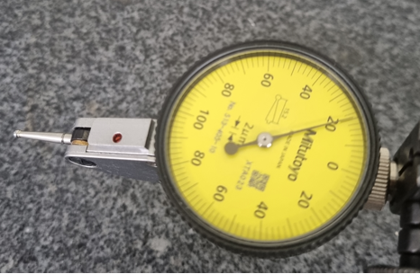
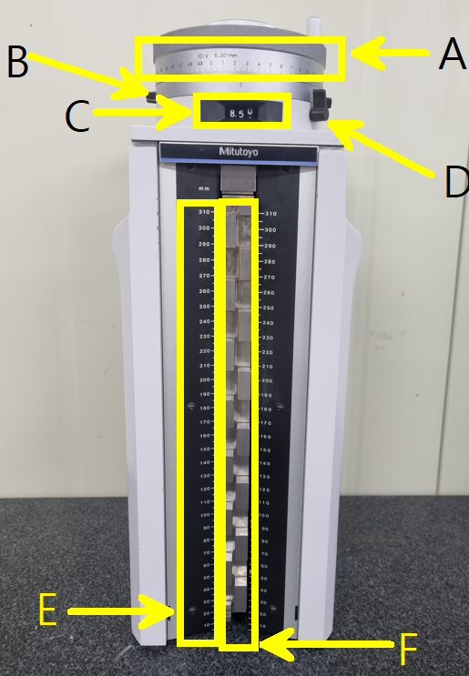
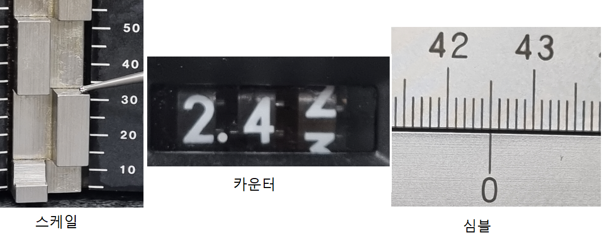

① 블록 게이지(11mm권장)
② 하이트 게이지
③ 다이얼 테스트 인디케이터
|  |
A: 심블심블의 눈금단위는 0.001mm이며 상단의 손잡이를 돌리면 스텝게이지 블록이 상하로 움직인다. 치수를 읽을 때는 기선과 만난는 점을 소수점 3짜자리 단위로 읽는다.B: 기준링0점 조정시 심블의 0눈금과 기선의 0점을 맞추는데 사용된다.C: 카운터심블의 회전시 스텝게이지가 몇 mm 움직였는가를 나타내는 창이다. 치수를 읽을 때는 소수점 1째짜리까지 읽는다.D: 기준링 클램프0점 조정 시 기준링을 고정하는데 사용된다.E: 스케일몸체에 고정되어 있으며, 10mm단위로 눈금을 읽을 수 있으며, 치수를 읽을 때는 스텝 게이지 블록이 위치한 아래 치수를 읽는다.F: 스텝 게이지 블록블록의 길이는 20mm이며, 프루브가 닿는 면으로 상향, 하향 측정이 가능하다. |
하이트 마스터는 다음과 같은 순서로 0점 조정한다.

| 
| 
|
|---|---|---|
①게이지블록 0점11mm 게이지 블록을 정반위에 놓고인디케이터를 높이를 낮추면서 눈금이 20칸 이내에 멈춘 후 베젤을 돌려 0점을 맞춘다. |
②스텝 블록게이지 0점인디케이터 0점에 가까운 지점에스텝블록 게이지를 돌려 가며 인디케이터의 눈금을 0이 될 때까지 심블을 돌려 준다. |
③심블 0점, 카운터 1.0mm 0점카운터의 눈금 1.00을 확인하고클램프를 해제 시켜 기준링의 0과 심블의 0을 일치시킨 후 클램프로 고정시킨다. |
4. 측정 치수 읽기
- 0점 조정과 같은 방법으로 측정물에 인디케이터의 0점 →심블을 돌려 해당 스텝 블록게이지에 인디케이터의 0점 맞춘다.
- 프루브가 위치한 스케일의 눈금을 읽는다.(10mm단위)
- 카운터의 눈금을 읽는다.(소수점 1째짜리까지)
- 심블의 눈금을 읽는다.(500칸 중 10단위 눈금만 읽어 1000으로 나눈다)
- 스케일 눈금+카운터 눈금+심블의 눈금을 더해준다.
5. 측정 치수 읽기 연습(예제)
다음 측정 값을 읽으시오.(mm단위이며 단위는 생략. 해당 그림에 마우스를 가져다 주면 각 부분별 정답이 보입니다.)

최종값: